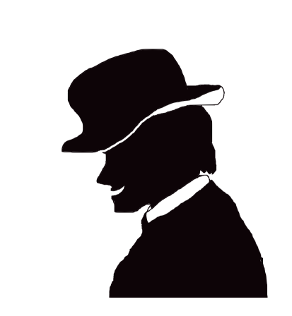

お支払いは、錬金で！

見習い錬金術師の皆さんは、とあるお店で、金塊での支払いを求められてしまいました！
錬金術を使って、支払ってしまいましょう！
鉱物チップを集め、魔法陣にセットすることを目指す『セットコレクションゲーム』です。
- 鉱物集め
- 競争相手への妨害
- 魔法陣への鉱物のセット
など...やることいっぱいです。
ゲームの準備
- 鉱物を、右表の個数分、袋の中に入れて良く混ぜます。
- 各プレイヤーはそれぞれベーシック魔法陣を2枚ずつ、絵柄が円になるように向きを合わせて手前に並べます。
- 最近闇市に行ったプレイヤーがスタートプレイヤーです。
スタートプレイヤーから時計回りに、1周するまで順番に、袋から3個ずつランダムに鉱物を取り出し、それぞれの手元に置きます。
- アドバンスド魔法陣6枚をすべて裏向きにして良く混ぜ、場の近くに置きます。これを山札と呼びます。